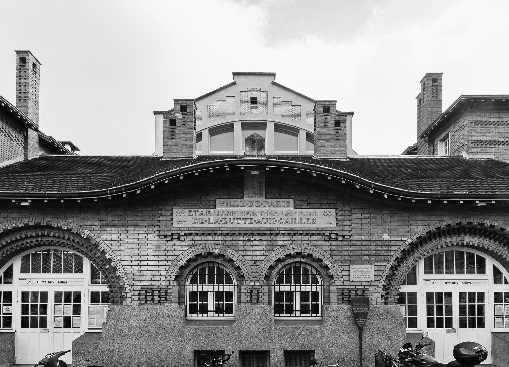
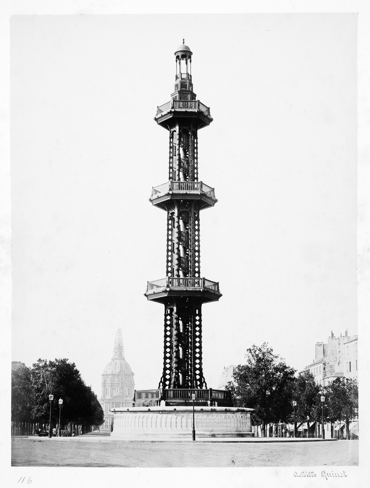
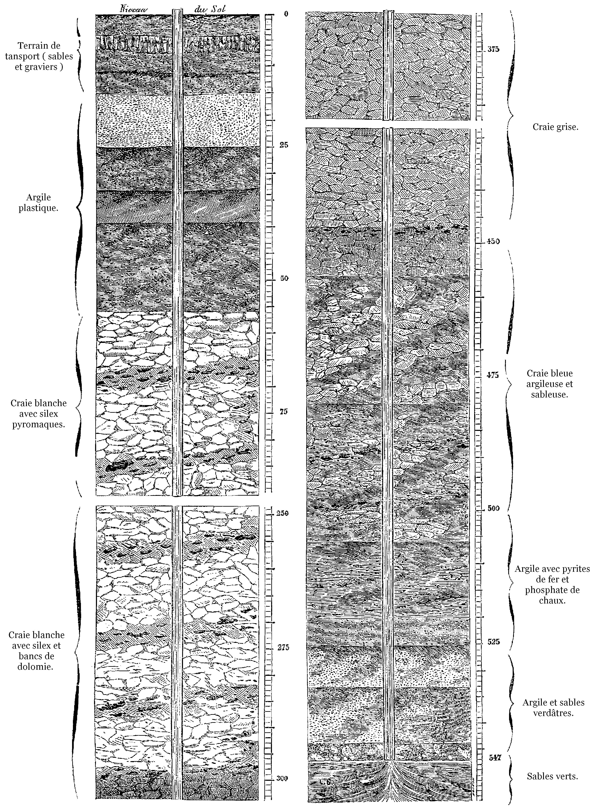

La place Paul-Verlaine, dans le quartier de la Butte-aux-Cailles, regroupe des bains-douches, une fontaine publique et une piscine dont la façade Art déco en briques rouges donne tout son charme au lieu. Réalisée en 1924, la piscine présente une immense voûte en béton armé visible à l’intérieur. L’ensemble du bâtiment a été inscrit aux monuments historiques, fait très rare pour un établissement de bain. Depuis 2017, la piscine dispose de l’un des seuls bassins extérieurs ouverts toute l’année, dit « bassin nordique ».

Piscine de la Butte-aux-Cailles dans le XIIIe arrondissement de Paris. Photo : Laurent Kruszyk, Région Île-de-France.
Lieu de baignade quotidienne comme d’expérimentation, la piscine de la Buttes-aux-Cailles a fait preuve d’originalité technique dès ses débuts. Son emplacement doit son origine à la découverte, au XIXe siècle, d’une nappe d’eau chaude dans le sous-sol. Le physicien François Arago a l’idée d’y installer un système pour en bénéficier en surface : le puits artésien.
Ce dispositif technique permet de récupérer l’eau grâce à un système de forage qui descend jusqu’à la nappe phréatique, à 600 mètres sous terre. La pression en sous-sol est alors telle que l’eau remonte spontanément jusqu’à la surface. Le tout premier puits artésien est construit par François Aragoet l’entrepreneur Louis-Georges Mulot dans la cour des abattoirs de Grenelle.

Colonne du puits artésien de Grenelle sur la place de Breteuil à Paris (1903). Source : Bibliothèque royale du Danemark (CC BY-NC-ND).

Coupe des terrains traversés par le forage du puits de Grenelle. Document issu de l’ouvrage de Louis Figuier, Les Merveilles de la science (1870).
François Arago souhaite installer ce type de puits à la Buttes-aux-Cailles pour approvisionner ce quartier très peuplé et déverser un surplus dans la Bièvre, un affluent de la Seine qui coule à proximité et dont le débit diminue. Cette rivière nauséabonde doit être alimentée en eau par mesure de salubrité.
En tant que secrétaire perpétuel de l’Académie des sciences, Arago poursuit également un intérêt purement scientifique en décidant de percer le sol de Paris jusqu’à 600 mètres sous terre : il ne cherche pas seulement à atteindre la nappe phréatique, mais aussi à déterminer le gradient géothermique, c’est-à-dire le taux d’augmentation de la température dans le sous-sol à mesure que l’on s’éloigne de la surface. L’opération est un succès : dans sa note intitulée « Température de la terre croissante avec la profondeur », il annonce qu’un degré centigrade « correspond à un enfoncement de 26 mètres 60 ».
Pour quelles raisons Arago a-t-il fait creuser ces puits ? Politiques (il a été député, ministre et même chef de l’État par intérim), sociales (républicain convaincu, il a toujours cherché à œuvrer pour les classes les plus populaires de la société)ou par passion scientifique (il est à l’origine de nouvelles disciplines comme l’astrophysique) ? Lisons plutôt dans ses expérimentations urbaines une illustration de ce que l’historien des techniques Thomas P. Hughes a appelé le « tissu sans coutures », c’est-à-dire l’idée qu’une innovation s’insère tellement dans un réseau hybride d’enjeux entrelacés, aussi bien politiques, économiques et sociaux que scientifiques et techniques, qu’il devient impossible d’attribuer une causalité à un type de raisonnement en particulier.
Comme dans le quartier Grenelle, les travaux du puits artésien de la Butte-aux-Cailles, lancés après autorisation du préfet Haussmann en 1863, se révèlent difficiles et ne s’achèvent qu’en 1904. À cette date, la Bièvre est déjà en cours d’enfouissement et il n’est plus question d’y déverser de l’eau. Le puits artésien permet en revanche d’abreuver le quartier et conduit à la construction des bains-douches puis de la piscine, aujourd’hui relié·e·s au réseau d’eau parisien. Il alimente toujours la fontaine publique de la place Paul-Verlaine et l’eau y sort à 28 °C. D’une composition différente des autres eaux desservies à Paris, elle est parfaitement potable.
La piscine de la Butte-aux-Cailles continue d’utiliser des systèmes techniques innovants pour faire jaillir l’eau chaude. En 2015, la Ville de Paris décide d’installer un data center dans son sous-sol afin d’utiliser la chaleur dégagée par les serveurs informatiques pour chauffer le bassin. Le data center fonctionnant sans interruption, le bassin extérieur offre une température constante de 27 °C et reste ouvert de manière permanente.
D’un point de vue technique, ce dispositif présente un double avantage. Comme dans le cas du puits artésien, il permet de chauffer la piscine à un prix moins élevé, 20 % en dessous du tarif habituel de la Compagnie parisienne de chauffage urbain. Surtout, le système réduit les émissions de gaz à effet de serre puisque les serveurs, qui sont de gros consommateurs d’énergie, n’ont plus besoin d’être refroidis et que leur chaleur est récupérée par la piscine. Selonla Ville de Paris, le système évite de rejeter chaque année 45 tonnes de CO2.
Le dispositif présente toutefois des limites importantes. La chaleur récupérée est insuffisante pour répondre à des besoins élevés : elle ne couvre que 8 à 10 % de l’énergie nécessaire au chauffage de la piscine de la Butte-aux-Cailles. Sceptiques, les professionnel·le·s du secteur y voient une manière artificielle d’améliorer les indicateurs énergétiques tout en ne contribuant que marginalement aux besoins réels d’un établissement.
En l’état actuel, le système a aussi l’inconvénient d’offrir la même quantité de chaleur en continu. Une partie de la chaleur récupérée est en fait inutilisée, notamment la nuit quand l’établissement est vide. Pour que le dispositif soit rentable, il faut également que les réseaux du data center et de l’établissement soient compatibles techniquement.
Quelle que soit sa pertinence, ce système technique qui réinvente l’eau chaude peut se lire comme un signe de l’Anthropocène : ce sont aujourd’hui des data centers énergivores, au cœur des sociétés numériques, qui tiennent lieu de nouvelle géothermie.
Pamela Schwartz
Pamela Schwartz est normalienne et conduit des projets d’urbanisme à la Ville de Paris.
Bibliographie
CARNINO Guillaume et MARQUET Clément, « Les datacenters enfoncent le cloud : enjeux politiques et impacts environnementauxd’internet », Zilsel, 3 (1), 2018, p. 19-62.
HUGHES Thomas P., « The Seamless Web : Technology, Science, Etcetera, Etcetera », Social Studies of Science, 16 (2), 1986, p. 281-292.
LEQUEUX James, François Arago, un savant généreux, Les Ulis, EDP Sciences, 2008.